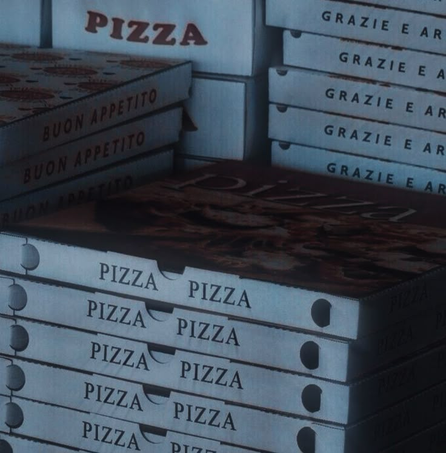

Olhei ao redor, procurando alguma referência no tempo — meu olhar caiu no velho relógio pendurado na parede descascada.
01h13 da manhã.
Era o turno da madrugada, aquele que quase ninguém queria pegar, mas que eu aceitava de bom grado. Estou trabalhando em uma pizzaria de bairro há algumas semanas, sete ou oito, se não me engano. O nome dela? Astropizza. Nome legal, não acha? Comecei meio que por impulso, na tentativa de mudar a rotina, testar territórios desconhecidos — uma espécie de “experimento social” pessoal, se é que isso faz sentido. E, convenhamos, eu meio que já vinha fazendo isso com minha vida inteira, então por que não?
De qualquer forma, naquela noite todos os outros funcionários resolveram sair mais cedo — não me lembro se foi alguma emergência coletiva ou só preguiça mesmo, mas o fato é que o caos inteiro ficou nas mãos de euzinha aqui. Sozinha na cozinha, com pilhas de louça e uma lista de tarefas que pareciam saídas de um ritual de purificação.
Apesar do pouco tempo ali, eu já tinha me adaptado razoavelmente bem à rotina. Claro, isso não significa que eu goste de tudo, e acho que ninguém em sã consciência conseguiria gostar 100% desse tipo de trampo.
E cá entre nós: quem é o retardado que sonha em passar a madrugada lavando cozinha industrial, fornos, áreas de armazenamento, escritório, limpando áreas "restritas apenas a funcionários", e enfrentando o verdadeiro inferno em forma de banheiro público? Porque o banheiro… Deus, O BANHEIRO. Esse “lugar” em específico dessa pizzaria tem potencial pra ser classificado como cena de crime. Não estou exagerando, simplesmente só lembrar daquela coisa já me causa ânsia de vômito. Já passei por uns bons pesadelos na vida, mas encarar aquele banheiro de madrugada está, sem dúvida, no top 3 experiências traumáticas.
Sendo bem honesta, preparar as pizzas sozinha e depois sair para entregá-las — também sozinha, diga-se de passagem — acabou se tornando uma espécie de prazer agridoce. Sim, é isso mesmo: além de cozinheira, eu virei entregadora nas madrugadas silenciosas. Caso eu não tenha mencionado antes, agora está aí a revelação. Multitarefas? Quem sabe.
Mas, olha, se for pra comparar com o resto do que preciso enfrentar ali dentro, essas duas funções até que são suportáveis. Na verdade, chegam a ser quase terapêuticas. Eu já tinha certa intimidade com a cozinha antes de começar nesse emprego, então montar os pedidos conforme o padrão da casa nunca foi um desafio real. A parte das entregas, então, é ainda mais tranquila. Entrar na moto, ligar o som baixo, sentir o vento da madrugada... às vezes é o momento mais pacífico da noite.
Com o passar das horas, o cansaço foi se acumulando como gordura em frigideira velha. Eu estava exausta. Depois de rodar a cidade com os últimos pedidos, voltei para a pizzaria só com o objetivo de encerrar a jornada. A cozinha ainda me esperava, parecendo rir da minha cara com seus azulejos manchados e utensílios fora do lugar. Mas fui lá, firme — esfreguei, limpei, desinfetei tudo o que ainda precisava ser limpo. Foi a última tarefa da noite.
O último pedido saiu às 01h23. Desde então, nenhum novo telefonema. Nenhum toque estridente do telefone fixo, nenhum cliente atrasado. Apenas o abençoado silêncio quebrado apenas pelo zunido agudo dos refrigeradores… Graças ao bom Deus.
Resolvi me jogar em uma das cadeiras da pizzaria e deixei meu corpo afundar ali mesmo, buscando desaparecer naquele instante, mesmo que apenas simbolicamente. Apoiei os braços sobre a mesa e encostei a testa no tampo gelado, fechando os olhos por instinto, não tanto para dormir, mas para deixar a mente vagar livremente. Já era 01h56 da madrugada.
Na minha cabeça, só faltava esperar mais uns vinte e poucos minutos. Às 02h20 em ponto, eu finalmente fecharia essa merda de pizzaria e iria embora pra casa, onde meu colchão de molas vencidas me esperava como um oásis particular. Meu corpo estava no limite. Sério. Cada músculo doía como se tivesse sido esfolado e remendado com fita isolante. Só de pensar em levantar de novo, meu estômago se revirava de cansaço.
Mas é claro que o universo — sempre tão irônico — não deixaria eu terminar a noite em paz.
O telefone tocou.
Aquele toque seco, insistente e intrusivo, que parecia vibrar direto no meu cérebro. Resmunguei para mim mesma, murmurando palavrões abafados e quase involuntários, sentindo minha alma amaldiçoar cada um dos sete pecados que me fizeram aceitar esse emprego.
Levantei lentamente a cabeça, encarando o nada com um olhar carregado de puro desgosto. Virei os olhos para o relógio.
02h09 da manhã.
Isso me enlouqueceu.
— Mas vai tomar no cu, né?! — soltei, exasperada, falando sozinha, como quem briga com o próprio destino. — Quem liga pra pedir pizza nesse horário? Essas pessoas não têm cama?
Soltei um suspiro pesado, me estiquei na cadeira numa espreguiçada dolorosa e, com o tipo de relutância que só o fim do expediente consegue provocar, me levantei. Fui me arrastando até o balcão, cada passo ecoando no chão silencioso, carregando o peso de quem atravessa um tribunal aguardando a sentença.
Peguei o telefone e levei até o ouvido. A voz saiu pesada, arrastada, quase morrendo antes de completar a frase:
— Astropizza, boa noite…?
E então, silêncio.
Um silêncio pesado e quase constrangedor. Os segundos se arrastaram, e por volta do décimo sexto eu já estava convencida de que era algum adolescente entediado tentando passar o tempo com um trote barato. E olha — por incrível que pareça — eu quase desejei que fosse isso mesmo. Porque, entre um trote idiota e ter que fazer mais um pedido, mesmo que mínimo, eu sinceramente preferia gritar com um estranho aleatório e desligar na cara dele.
Fui me preparando pra exatamente isso: desligar e voltar ao meu ódio silencioso do mundo. Já até segurava o telefone com aquele gesto típico de quem vai bater ele de volta na base.
Mas aí, bem quando meu dedo começou a se mover... uma voz surgiu.
— Uma calabresa grande, com borda de catupiry... E venha até a Rua Saint-Clair, número 187.
A fala foi quase sussurrada, mas havia uma distorção inconfundível. Tinha o som metálico de um modificador de voz — como aqueles que criminosos usam em filmes baratos pra esconder a identidade. Mesmo com o timbre todo adulterado, alguma coisa naquela entonação me dizia que era uma mulher do outro lado da linha.
Percebendo isso, a primeira reação que me veio à mente foi a mais humana possível: um impulso quase incontrolável de xingar a pessoa do outro lado da linha — e, por tabela, também quem quer que tivesse tido a infeliz ideia de colocá-la no mundo. Juro que meus pensamentos passaram rapidamente por todo o repertório de palavrões disponíveis em um só dicionário. Mas, por algum milagre de autocontrole ou puro esgotamento emocional, acabei optando por uma segunda reação mais racional, ainda que envolta em tédio: respirei fundo, engoli o veneno e resolvi seguir o protocolo.
Vai ver era só mais um trote idiota. Vai ver não. Seja como for, que se dane. Já tinha lidado com gente pior naquela noite.
— ...Tá. Uma calabresa grande com borda de catupiry. — murmurei, quase num tom automático, apoiando o telefone entre o ombro e o ouvido enquanto anotava o pedido no bloquinho encardido que ficava no balcão.
Meu tom de voz exalava desinteresse. Era impossível fingir empolgação naquela altura do campeonato, ainda mais acreditando que tudo aquilo provavelmente era só uma pegadinha barata feita por alguém sem nada pra fazer que devia ter acabado de descobrir como usar a bosta de um modificador de voz.
Rolei os olhos e segui com a encenação:
— Você tem algum ponto de referência, senhor...? Ou senhora...? — perguntei, deixando escapar um leve suspiro de impaciência no final da frase.
Nessa hora, minha mente já estava preparada pra ouvir algum trocadilho imbecil, daqueles que distorcem nomes de ruas pra virar uma palavra obscena ou piada de quinta categoria. Já tinha caído nesse tipo de coisa antes. Várias vezes, inclusive.
Mas, dessa vez, não houve piada.
Na verdade, não houve nada.
Silêncio.
5 segundos, 10 segundos, 20 segundos. Nada.
Do outro lado da linha, havia apenas isso: um silêncio absoluto, quase agressivo. Nada além de um vazio estático. Suspirei longamente, tentando reunir os últimos fragmentos da paciência que, surpreendentemente, ainda não haviam me abandonado por completo — talvez por teimosia, talvez por hábito.
— Senhor, se isso for alguma piada... já ouvi bem melhores, viu? — declarei, em um tom que oscilava entre o desdém e uma tentativa quase forçada de autoridade.
Silêncio.
Mais uma vez, só o eco da minha própria voz e o leve zumbido da linha. Comecei a ter a nítida sensação de que a pessoa do outro lado estava deliberadamente me ignorando, rindo por dentro, como quem diz: "Tá falando sozinha, otária, hahahaha." E isso, confesso, foi corroendo minha paciência como soda cáustica em tecido fino.
— ...Senhor? — insisti, agora sem disfarçar a irritação. A frustração transbordava no meu tom, roçando perigosamente o território do ódio. Não era só cansaço — era exaustão temperada com desprezo.
Foi quando a voz retornou.
— Apenas venha. — disse, e havia algo estranho na maneira como as palavras foram proferidas. Havia urgência. Ansiedade. Talvez até uma pontada de desespero mal disfarçado, denunciando uma necessidade urgente. A voz parecia... seca. — Estamos... com fome.
A linha caiu.
— Alô? Alô?! — insisti, agora em um tom mais alto, na esperança de que o aumento do volume fosse o suficiente para reanimar a conexão perdida.
Mas é claro que não foi. Era inútil.
Soltei um suspiro pesado e lentamente devolvi o telefone ao gancho, sentindo um cansaço quase existencial pesar sobre meus ombros. Me virei e encarei a cozinha como quem olha um campo de batalha após uma derrota — e eu já sabia o veredito: ainda havia uma última missão antes da tão sonhada rendição do meu corpo ao descanso.
Minha mente praguejava em silêncio, lançando uma torrente de xingamentos contra o universo, contra o cliente, contra o telefone, contra mim mesma por estar naquela situação em primeiro lugar. Mas, no fundo, eu sabia que reclamar não mudaria nada.
— É só mais uma pizza, Miska... — murmurei, quase tentando me convencer. — Não vai matar ninguém, né?
Me arrastei até a bancada de preparo com o mesmo ânimo de alguém indo para uma cirurgia sem anestesia. Lá, abri o enorme pote da massa fermentada que eu mesma havia preparado mais cedo naquela noite. O cheiro levemente ácido invadiu o ar, familiar e quase reconfortante.
Peguei uma porção generosa e comecei a moldar o disco com as palmas das mãos, os movimentos repetitivos fluindo como uma segunda natureza. Em um gesto quase automático, lancei a massa no ar, girando-a com precisão mecânica.
Seguindo o ritual que meu corpo já conhecia de cor, abri um saquinho de catupiry e tracei um círculo largo sobre a borda da massa. Dobrei cuidadosamente as extremidades, selando cada parte com a ponta dos dedos até formar aquele aro espesso, recheado, e quase digno de uma pizza de respeito.
Molho espalhado de maneira circular, calabresa em fatias finas, bem alinhadas, como escamas sobrepostas e cebola por cima das mesmas em rodelas finas e, por fim, o forno.
Depois de alguns minutos no forno, a pizza finalmente ficou pronta. A crosta dourada, o aroma quente de catupiry misturado à calabresa — tudo estava perfeitamente no ponto. Passei o antebraço pela testa, limpando o suor acumulado, fruto de mais uma sequência interminável de movimentos automáticos e um corpo que já operava no modo sobrevivência.
Com um suspiro pesado, deslizei a pizza recém-saída do forno para dentro da caixa, fechei a tampa e fiquei ali por um breve momento apenas olhando.
Basicamente um belo resumo de eu apenas abusando do meu cansaço somente pra satisfazer um idiota que poderia estar facilmente me enganando para os próprios prazeres idiotas. Mas enfim — pedido feito, missão quase cumprida. Só faltava a entrega.
Olhei para o relógio pendurado na parede.
2h30 da madrugada.
Oficialmente, o expediente já havia terminado — o horário de fechamento tinha passado, e com ele, minha paciência também. Mas, de certa forma, aquilo era um alívio. Aquela seria a última entrega da noite. Depois disso, eu teria direito, finalmente, ao meu descanso merecido.
Sem perder tempo, comecei os procedimentos finais com a precisão de quem já havia feito aquilo dezenas de vezes: guardei todos os ingredientes perecíveis em potes fechados, organizando-os entre geladeira e freezer conforme as normas de conservação; fechei o caixa e armazenei o dinheiro no cofre da pizzaria, seguindo o protocolo à risca; desliguei os equipamentos, apaguei as luzes não essenciais — exceto, claro, pelas que mantinham os sistemas de refrigeração — e, por fim, travei todas as portas, janelas e entradas com a precisão quase robótica de uma rotina já internalizada.
A pizzaria estava finalmente fechada.
Só restava eu e a caixa de pizza. E aquele endereço estranho: Rua Saint-Clair.
Antes de sair, tirei o celular do bolso e digitei o nome da rua no GPS, torcendo para não ter caído em alguma pegadinha idiota e ter desperdiçado tempo e ingredientes à toa. Por incrível que pareça, não — a rua existia mesmo. Estava ali no mapa, com coordenadas e tudo. Um alívio discreto se espalhou por mim, meu cérebro praticamente dizendo: “Pelo menos você não foi 100% trouxa.”
Coloquei cuidadosamente a pizza dentro da bolsa térmica, ajustei a tampa e, com um último suspiro resignado, caminhei até minha moto. A chave girou na ignição com um estalo seco, o motor ganhou vida, e eu parti, deixando para trás a pizzaria finalmente adormecida.
A cidade parecia suspensa no tempo naquela hora da madrugada. Cruzei as ruas em velocidade constante, serpenteando por avenidas majoritariamente vazias — quase vazias, na verdade, já que alguns poucos carros dividiam comigo aquele cenário noturno. Faróis distantes, motores abafados, destinos desconhecidos. Cada veículo parecia seguir sua própria narrativa noturna, uma solidão paralela à minha, mas igualmente solitária.
Enquanto a moto cortava o vento, meus olhos captavam flashes daquela paisagem urbana adormecida: casas elegantes com luzes tênues, vitrines de lojas apagadas, a silhueta colorida de um parque de diversões fechado — as rodas-gigantes paradas como esqueletos gigantescos no escuro. Uma parte de mim queria desacelerar e simplesmente apreciar aquele cenário encantador em silêncio. Mas duuuh! É claro que eu não podia. Estava no meio da estrada, em cima de uma moto, carregando uma pizza pra sabe-se lá quem.
E como toda beleza noturna que tenta ser contemplada demais, ela desapareceu.
Os minutos seguintes transformaram o percurso em algo completamente diferente. A cidade foi ficando para trás, e o cenário mudou de forma abrupta. As construções sumiram gradualmente, substituídas por um silêncio que não era apenas ausência de som — era um tipo de vazio denso. Eu me vi agora em uma estrada estreita, ladeada por fileiras de árvores altas, escuras, que se inclinavam sobre a pista em um gesto que lembrava a curiosidade de quem observa de perto.
Na moral, era como entrar em outra dimensão, onde o concreto já não fazia mais sentido nenhum e tudo o que existia era floresta e sombras.
Notei, ao longo do caminho, placas metálicas espaçadas, enferrujadas, cada uma com uma única seta branca apontando para frente. Sem nomes de ruas, sem distâncias. Apenas setas silenciosas que pareciam uma ordem muda para continuar avançando, sem me permitir olhar para trás.
Conferi o aplicativo de GPS no celular para ver se estava perto do destino. A essa altura, seria mentira dizer que aquele trajeto não estava começando a me causar um desconforto real. Para o meu alívio, a tela indicava que faltavam apenas alguns poucos quilômetros.
Depois de algo que pareceram longos 25 ou 30 minutos — tempo suficiente para questionar todas as minhas escolhas de vida —, eu finalmente cheguei na famigerada Rua Saint-Clair.
Estacionei a moto à beira da estrada e desci. O ar naquele ponto era espesso e úmido, carregado de um peso invisível, respirando abandono. Olhei ao redor e a sensação era de ter entrado numa espécie de brechó cósmico de espaços urbanos descartados — tipo um Achados e Perdidos que ninguém nunca voltou pra reclamar.
A rua inteira parecia ter sido deixada para apodrecer com o tempo. O asfalto era irregular, quebradiço, coberto por uma manta de folhas secas, galhos quebrados e musgo — sinais de que a terra exigia de volta o que um dia lhe fora arrancado. Mais à frente, o caminho asfaltado simplesmente desaparecia, sendo engolido por um trecho de terra batida, molhada, manchada por lama.
No fim daquele corredor desolado, envolta por um cinturão de árvores grotescamente altas e retorcidas — seus troncos pareciam registrar convulsões, cada curva uma tentativa desesperada de se soltar das raízes —, estava a casa. Número 187.
Era uma construção isolada e silenciosa, com janelas escuras e uma arquitetura que parecia presa em outra década, a casa tinha aquela presença incômoda que não exige explicações para se tornar ameaçadora. Era o tipo de lugar que você espera encontrar.. sei lá, em alguma uma fotografia antiga? Provavelmente, mas nem fodendo no meio da madrugada, no fim de uma estrada sem nome.
Caminhei em direção à casa com passos medidos, coreografados por um instinto que gritava cautela. Meus olhos examinavam cada detalhe do entorno, tentando em vão encontrar alguma familiaridade naquele cenário arrancado de um pesadelo esquecido. A atmosfera despertava em mim uma paranoia silenciosa, uma necessidade involuntária de vigiar cada canto; a escuridão parecia manter sobre mim um olhar que não piscava.
A casa não era apenas velha. Era decadente. Tinha dois andares, ambos com a madeira cinza-azulada escurecida e rachada pelo tempo, um registro das batalhas perdidas contra o clima que a corroía. As janelas estavam praticamente cegas, tampadas por tábuas que pendiam como ossos tortos, presas apenas pela ferrugem. O que antes fora um jardim era agora um campo de mato alto, quase hostil, e no canto do terreno repousava o que sobrou de um carro — ou melhor, o esqueleto enferrujado de um que parecia ter sido esquecido ali desde outra era.
Parei diante da porta, hesitante. Como um último esforço de negação, peguei o celular e conferi novamente o aplicativo de localização, torcendo, talvez, para descobrir que havia cometido algum engano, que o destino correto era uma rua ao lado, uma casa iluminada, habitada, humana. Mas não. O GPS era claro: Rua Saint-Clair, número 187. Era ali mesmo.
“Certo…”, pensei comigo, tentando arrancar algum fiapo de racionalidade daquela situação absurda. Não consegui.
Engoli em seco, respirei fundo e bati três vezes na porta com firmeza.
— Olá...? Entrega! — anunciei, elevando o tom de voz, como quem desafia o próprio eco.
Sem resposta.
Olhei ao redor por alguns breves segundos, tentando encontrar qualquer sinal de presença humana — uma sombra na janela, um rangido vindo de dentro, uma luz acesa — mas nada. Apenas o silêncio mórbido do lugar me respondia. Com um suspiro resignado, bati na porta mais uma vez. Três toques secos e insistentes.
— Ehhh...? Olá?! — gritei, elevando a voz mais do que gostaria, num misto de impaciência e nervosismo.
Dessa vez, algo aconteceu. Mas não exatamente o que seria considerado uma resposta... convencional.
A porta diante de mim se abriu em um movimento arrastado, soltando um lamento de madeira e ferrugem. O mais estranho? Não havia ninguém do outro lado. Nenhuma figura à espreita, nenhuma mão girando a maçaneta — nada. Parecia que a casa tivesse decidido, por vontade própria, me receber, assumindo o papel de dona do lugar..
Antes que eu pudesse racionalizar o absurdo da cena, uma voz ecoou lá de dentro, vindo do andar superior. Era uma voz masculina, com um tom suave, quase teatral.
— Oooh, a pizza chegou? Muito obrigado pelos seus serviços, garota. — disse, com uma leveza que parecia fora de lugar. Havia algo de inquietante ali, não exatamente pelo conteúdo da fala, mas pela forma como sua voz parecia se espalhar pelo espaço, reverberando de um ponto que meus olhos não conseguiam alcançar. — Me desculpe se estou sendo indecente, mas... você poderia subir e trazer a pizza até aqui? Prometo que deixo uma boa gorjeta se fizer isso.
Fiquei paralisada por um instante. A parte racional da minha mente acendeu todos os alarmes possíveis. Nada naquilo fazia sentido. Quem pede para uma entregadora entrar em uma casa completamente abandonada, no meio da madrugada, no fim do mundo, só para subir e entregar uma pizza?
Mas outra parte de mim — talvez a que estava exausta demais para argumentar, ou talvez a que ainda queria acreditar que era apenas um cara excêntrico, solitário, que morava longe por opção — tentou racionalizar a situação. “Talvez ele só seja esquisito... Gente esquisita também come pizza, afinal.”
Contra o bom senso, inspirei fundo, segurei a caixa com mais firmeza e dei meu primeiro passo para dentro da casa.
Assim que cruzei a soleira da porta, fui imediatamente engolida por uma escuridão opressora, mas não foi somente a luz que foi engolida naquele lugar, todo o meu senso de orientação também foi pra casa do caralho. Por alguns segundos, só consegui distinguir formas vagas graças à fraca iluminação da noite que entrava pela porta ainda entreaberta. Identifiquei o que parecia ser uma sala à esquerda e, um pouco adiante, a sugestão de uma cozinha. O restante era apenas um breu silencioso e imóvel.
Mas antes que eu pudesse dar mais um passo ou sequer me convencer de que entrar ali havia sido uma ideia minimamente razoável, algo me surpreendeu com uma brutalidade fria: a porta atrás de mim se fechou com violência, batendo com tanta força que o som pareceu ecoar por toda a casa. Instintivamente, dei um salto e me virei, o coração disparado e meus olhos arregalados, meu corpo reagindo antes que minha mente conseguisse processar o ocorrido.
Por reflexo, me virei de volta para o interior da casa, mas agora havia algo diferente em mim: meu corpo inteiro estava tomado por um tremor involuntário, e minha mente, inundada por uma avalanche de sinais de alerta.
— ...S-Senhor...? — murmurei, com uma voz que mal se sustentava, mais como um sussurro inseguro do que como uma pergunta propriamente dita. No fundo, eu sabia que não queria resposta alguma.
E, de fato, ela não veio.
Nenhuma voz, nenhum som de passos. Nenhum indício de que havia, de fato, alguém ali além de mim. O homem que me chamara parecia ter evaporado. Ou, pior: talvez nunca tivesse estado lá.
Meus dedos buscaram o bolso do casaco, quase automaticamente. Lembrei que, ao fechar a pizzaria, eu havia colocado uma pequena lanterna ali, por pura precaução. Algo bem conveniente, mas que me salvou no meio de toda essa escuridão. A luz fraca e amarelada rompeu a escuridão como um farol tímido, mas foi o suficiente para me dar uma ideia mais concreta do ambiente que me cercava.
E meu Deus... Olhando para a casa como um todo, não dava para não sentir uma pontada de tristeza. Tudo ao redor estava em ruínas, resultado de décadas de abandono e desgaste. As paredes descascadas, os objetos largados pelo chão, o musgo subindo pelas superfícies pareciam reivindicar o espaço, lembrando que a vida havia se esvaído dali. Casa, árvores e escombros se fundiam, formando uma simbiose de decadência congelada em meio à decomposição estética.
Logo à minha frente, uma escadaria se erguia — ou melhor, tentava. Levava ao segundo andar da casa, embora eu já duvidasse se ainda existia um segundo andar funcional ali. Os degraus estavam carcomidos, cheios de lascas e manchas verdes de umidade e musgo. Olhar para aquilo por mais alguns segundos foi o suficiente para reacender dentro de mim o mínimo de senso de autopreservação.
— Isso aqui é furada, foda-se essa pizza.
Falei em voz alta, mais para mim mesma do que pra qualquer outra presença — caso houvesse mais alguém naquela casa, o que, sinceramente, eu preferia nem confirmar. Me preparei para dar meia-volta e deixar aquele cenário de filme de terror pra trás. E quer saber? Meu chefe que se virasse com as reclamações. Bastava ele ver esse lugar, com um mínimo de bom senso, e entenderia na hora.
No entanto, assim que me virei para sair, me deparei com algo que me fez congelar no lugar. Não foi um susto qualquer — foi um pavor que gelou cada extremidade do meu corpo e tirou o ar dos meus pulmões.
Bem diante de mim, em silêncio absoluto, estava... algo. Um homem — ou ao menos a forma de um. Tinha aproximadamente a minha altura, talvez um pouco mais. Usava um casaco preto, comprido, pesado. O rosto estava completamente oculto por uma máscara escura, sem expressão. Mas o detalhe que mais me chamou atenção — e que fez meu estômago revirar — foi o que ele carregava nas mãos: uma faca de cozinha. Enferrujada. Longa. E tremendo.
As mãos dele tremiam de um jeito estranho — não de medo ou nervosismo, mas de excitação. Como se o desejo de usar aquela lâmina estivesse à flor da pele. Como se ele estivesse se contendo por puro prazer de prolongar o momento.
E, pelo visto, ele não conseguiu suportar por muito mais tempo.
Num rompante violento, ele ergueu a faca e avançou contra mim, com a fúria de alguém que já havia perdido totalmente o controle. Meu corpo reagiu por puro instinto: levantei a caixa de pizza na frente do rosto, transformando-a em um escudo improvisado.
O impacto foi brutal. A faca atravessou a tampa de papelão e rasgou a pizza com a facilidade de um papel molhado, passando perigosamente perto do meu rosto. Mas ele foi além — num movimento rápido e calculado, desferiu um chute certeiro contra minhas pernas, me jogando ao chão sem qualquer cerimônia. Caí de costas derrubando minha lanterna das minhas mãos no processo, o ar me escapando por entre os dentes, e antes que eu pudesse sequer me recuperar, vi a lâmina ser erguida novamente, prestes a descer contra meu peito com uma intenção clara e definitiva.
Mas eu consegui ser mais rápida.
Minhas mãos se ergueram no último segundo, agarrando os punhos dele com força. Foi nesse momento que a luta deixou de ser física e se tornou algo mais profundo — uma batalha crua entre a pulsão de morte e o impulso visceral de continuar viva. A faca tremia entre nós, os músculos dos meus braços gritavam por alívio, mas eu me recusava a ceder.
Percebi que ele estava totalmente focado na tentativa de me imobilizar, e foi aí que a oportunidade surgiu. Com um movimento rápido e desesperado, desferi um chute violento entre as suas partes baixas. Ele não gritou, mas o corpo dele reagiu com um espasmo agudo e descoordenado. A lâmina se desviou no ar, e sua postura perdeu equilíbrio.
Aproveitei a brecha. Cerrei o punho e acertei um soco direto em seu rosto coberto pela máscara. Um estalo seco reverberou entre nós — o som da minha própria sobrevivência se afirmando com brutalidade. Empurrei-o com força, e ele tombou para trás, abrindo espaço entre nós.
Agora era a minha chance.
Levantei num sobressalto, impulsionada pela urgência, e disparei em direção à porta de entrada. Meus dedos tremiam enquanto eu girava a maçaneta com todas as forças, repetidamente, na esperança de que a insistência pudesse abrir o caminho. Nada. A porta permanecia imóvel, enraizada na casa como parte de sua própria arquitetura.
Continuei tentando por mais alguns segundos, murmurando entre dentes, com a voz embargada por um choro que ameaçava se formar, mas que ainda não havia sido autorizado pelo medo.
— MERDA! — gritei, a palavra rasgando minha garganta como um grito de revolta pura, o desespero e a raiva fervendo no meu sangue como óleo quente.
Virei o rosto por impulso e vi o homem ainda caído no chão, parcialmente contorcido. Mas sua recuperação era visível. O corpo tremia de dor, mas ele estava se reerguendo, centímetro por centímetro, como um animal faminto que se recusa a morrer antes da caça.
Foi aí que me lembrei das escadas. Sem pensar duas vezes, girei nos calcanhares e corri em direção a elas. O desespero agora se convertia em combustível bruto, um segundo fôlego movido pelo medo. Cada degrau que eu subia parecia ranger sob meus pés, como se a casa estivesse tentando me alertar: não vá.
Quando alcancei o segundo andar, fui recebida por um corredor estreito e opressor, onde o ar parecia ainda mais espesso. Havia duas portas à esquerda e uma à direita. Fui de uma a uma, tentando as maçanetas com pressa febril, mas todas estavam trancadas. Cada clique seco e frustrado parecia zombar da minha urgência.
Restava apenas uma: a porta ao centro, no fim do corredor. Caminhei até ela com a esperança já desfigurada pela exaustão, mas sabendo que não me restava mais nada. Não era otimismo. Era necessidade.
Tentei abrir, e adivinha?
Nada.
Virei o corpo lentamente, como quem teme que até o próprio movimento possa fazer barulho demais. Meus olhos estavam fixos no caminho que eu havia percorrido até ali — mais especificamente, nas escadas que me levaram ao segundo andar. Esperava, quase com certeza, que em algum momento ele aparecesse. Que sua silhueta surgisse no topo dos degraus, com aquela máscara sem rosto e a faca tremendo nas mãos. Eu já estava praticamente me preparando mentalmente para o inevitável.
Mas o inevitável não veio.
Em vez disso, percebi algo que prendeu minha atenção de forma inquietante.
Silêncio.
Nada além de silêncio.
Não havia nenhum rangido, nenhum passo abafado nas tábuas do piso inferior, nenhum ruído sutil que denunciasse movimentação. A casa permanecia em completo silêncio, criando a sensação de que cada cômodo prendia a respiração junto comigo, aguardando. Aquilo me deixou mais nervosa do que qualquer barulho possível. Porque, se ele estava se aproximando, era um fantasma. E se estava indo embora, por que diabos me trancaria aqui dentro?
Uma possibilidade sussurrou na minha mente, tênue como névoa:
“Será que… eu devo ir ver?”
A ideia soou absurda, mas ainda assim se alojou no fundo da minha consciência como uma semente incômoda.
Com isso, decidi me aproximar. Faria isso com cautela, como uma gata assustada prestes a espiar do beiral. Caminhei até as escadas com a leveza de quem pisa em vidro. Meus passos eram medidos, distribuindo o peso do meu corpo cuidadosamente, temendo que o chão denunciasse minha presença.
Quando alcancei o topo da escada, inclinei lentamente a cabeça, tentando ampliar meu campo de visão sem revelar demais o corpo. A lanterna em minha mão tremia levemente, não só pela adrenalina, mas pela tensão que já começava a cobrar seu preço.
E então... nada.
Nenhum sinal do homem. Nenhum som. Nenhuma sombra suspeita se movendo no andar de baixo. Ele havia simplesmente sumido.
Ergui uma das sobrancelhas, sentindo um incômodo instintivo tomar conta de mim — algo que nem mesmo eu sabia nomear direito. Dei alguns passos para trás, ainda encarando o vão da escada, com a intenção de retornar até a porta central do corredor. No entanto, antes que pudesse sequer tocar na maçaneta, meu corpo colidiu com algo.
Não era parede. Não era madeira. Era... quente. Orgânico.
E naquele instante, congelei.
Atrás de mim, quase colada à minha nuca, pude ouvir uma respiração pesada, irregular, quase animalesca. Não era apenas cansaço; havia algo primitivo e profundo, uma batalha silenciosa travada contra instintos viscerais. Uma ânsia de cometer atos que eu, sinceramente, não quero nem imaginar quais seriam.
Quem diabos era aquilo?
A resposta parecia óbvia e, ao mesmo tempo, absurda. Não era o mesmo homem de antes — disso eu tinha certeza. O toque era diferente. O cheiro era diferente. E, acima de tudo, a presença era outra. Mais opressiva e… impura.
No reflexo do puro pavor, tentei me virar, pronta para desferir o que quer que fosse: um golpe, um empurrão, uma tentativa desesperada de resistência. Mas não houve tempo.
A coisa me envolveu com força bruta, os dois braços se apertando ao redor do meu corpo como uma armadilha. A mão esquerda subiu rapidamente, abafando minha boca com uma firmeza sufocante, silenciando meus gritos antes que pudessem ser lançados ao ar. O cheiro que vinha daquela pele era nauseante, uma mistura de terra, mofo e algo metálico que me enjoava só de respirar.
Ele me arrastava corredor adentro com uma firmeza calculada, cada passo denotando precisão e intenção, como alguém que tivesse planejado cada movimento. Mesmo em meio ao pânico, consegui perceber que o cômodo para o qual estávamos indo era o mesmo do centro do corredor — aquele que, até segundos atrás, se recusara a abrir. Me debatia com tudo o que tinha: braços, pernas, respiração, vontade. Tudo em mim era resistência. Mas nada parecia surtir efeito. A criatura não demonstrava cansaço, nem hesitação. Apenas seguia em frente, como um ritual silencioso.
Quando finalmente atravessamos a porta, vi o homem — o primeiro, aquele da máscara e da faca — caminhando calmamente em direção à entrada do cômodo, como se estivesse apenas cumprindo sua parte no plano. Ele nos olhou por um breve instante, fechou a porta com um estrondo seco e me deixou sozinha. Sozinha... no escuro... com aquilo.
E então, escuridão.
A escuridão me abraçou inteira. Não enxergava nada, mas sentia tudo. A respiração dele encostava no meu pescoço como se estivesse degustando o cheiro do meu medo. Sua mão, que antes calava minha boca, começou a se soltar devagar, até me libertar por completo. Meu corpo despencou no chão como um peso morto — e dessa vez, não fiz menção de levantar.
Deitei com a cabeça pressionada contra o piso frio, os olhos bem fechados, o coração doendo no ritmo dos segundos. Parte de mim já havia aceitado o fim de toda essa merda.
“É aqui que acaba”, pensei. “É assim que morre uma entregadora de pizza.”
Mas então...
“SURPRESA!!!”
Aquela explosão de vozes quase me fez pular — e não de susto, mas de pura confusão.
— O quê...? — murmurei, abrindo os olhos num impulso, como quem desperta de um pesadelo e ainda não sabe se voltou à realidade.
Levantei a cabeça devagar, e a cena que encontrei não fazia o menor sentido. Eu estava em um quarto perfeitamente arrumado, limpo, iluminado. As paredes estavam cobertas com faixas de “Surpresa”, balões coloridos flutuavam em cantos aleatórios, e mesas abarrotadas de salgadinhos, doces e refrigerantes compunham um cenário digno de qualquer salão de festa.
Ashley estava rindo perto da janela. Kenda se escondia atrás de um monte de travesseiros com uma câmera na mão, tentando não rir alto demais. Jellie se aproximava com um copo de refrigerante estendido, como se nada de anormal tivesse acontecido. E, bem na minha frente, de pé e sorrindo feito um idiota, estava Jeffrey — o "monstro" que me arrastara pra cá.
— O que é que tá acontecendo aqui?! — gritei, ainda ofegante, com os pulmões implorando por ar e a mente tentando, em vão, entender se aquilo era uma pegadinha, um pesadelo ou algum surto coletivo que eu havia sido empurrada pra dentro.
Antes que qualquer um pudesse me dar uma resposta minimamente coerente, a porta — aquela mesma que havia sido brutalmente fechada minutos atrás pelo “homem misterioso” — voltou a se abrir. E, sinceramente, eu nem acreditei... Ash surgiu do outro lado, revelando-se como o tal mascarado.
A imagem dele era, no mínimo, trágica. Seu rosto estava uma bagunça: dois ou três dentes faltando, a boca sangrando, o nariz igualmente ferido. As pernas? Tremendo tanto que parecia prestes a desabar ali mesmo. Era como se o próprio corpo estivesse protestando contra a péssima ideia que ele teve de bancar o psicopata.
Mesmo assim, num último ato de teimosia performática, Ash sacou um lança-confetes e estourou ali mesmo, no meio do cômodo. Pedaços coloridos voaram pelo ar num contraste absurdo com o sangue escorrendo pelo seu queixo. A cena inteira parecia saída de algum filme experimental de terror com orçamento baixo e senso de humor duvidoso. Era visível que ele não estava se aguentando mais em pé, mas ele claramente também não queria perder o “clímax” da situação, embora a realidade quisesse mostrar pra ele que o mesmo estava atrasado.
— S-Surpreeeeesaaaaa...! — ele murmurou, tentando soar animado, mas sua voz veio falhada, trêmula, quase como se ele estivesse à beira do desmaio. — Ah... e a p-pizza tá lá na sala... alguém pega... pelo amor de Deus...
E dito isso, ele finalmente cedeu à dor e despencou no chão.
— E aí, garotona! Que cara é essa? Parece que viu um fantasma! — disse Kenda entre risos, se aproximando para me ajudar a levantar. O tom dela era leve, descontraído, como se tudo isso tivesse sido apenas um teatrinho de fim de semana.
— Você precisava ver a sua cara! — continuou ela, segurando o riso. — Eu juro, essa gravação vai pro hall da fama das pegadinhas épicas.
Enquanto eu ainda processava o que porra tava acontecendo, Jellie surgiu logo atrás, com um copo de refrigerante na mão e aquele ar blasé de quem já sabia de tudo.
— A Ashley que teve a ideia. — disse ela, tomando um gole como se aquilo explicasse qualquer coisa. — A proposta era fazer uma “festinha surpresa”, mas aparentemente ela levou “surpresa” pra um outro nível. Quase um ritual de passagem, né? Mas, ó... tenho que admitir: ela foi minuciosa. Escolher um lugar tão sinistro assim? Um toque de mestre. E como você trabalha numa pizzaria, tudo se encaixou... na cabeça dela, pelo menos.
Ao ouvir aquilo, virei lentamente o rosto em direção à Ashley, que, ao perceber meu olhar, levou a mão até os cabelos e forçou uma carinha de vergonha mal disfarçada, como quem tenta se esconder sem ter onde.
— Então... foi você? — minha voz saiu embargada, uma mistura de incredulidade, cansaço e aquele tipo de frustração que só nasce quando você realmente gosta das pessoas que querem te matar de susto.
— É… foi. — Ashley caminhou até mim devagar, nitidamente arrependida, tentando parecer leve mas visivelmente desconfortável com a própria ousadia. — Desculpa... eu acho que exagerei de novo, né?
Ela soltou uma risadinha breve — daquelas que surgem no meio do constrangimento, uma tentativa quase infantil de transformar em graça aquilo que, na verdade, foi um desastre completo.
Balancei a cabeça em silêncio, numa reprovação meio cansada, e caminhei até a parede mais próxima do quarto. Ashley veio logo atrás, sem dizer nada. Encostei as costas na parede gélida e fui escorregando até o chão, cada centímetro refletindo o cansaço que não era só físico. Quando me sentei, abracei os joelhos e fiquei ali, encarando o vazio com olhos turvos, a mente ainda zumbindo com o que tinha acabado de acontecer.
Do outro lado, Jeffrey lutava para levantar Ash, que mais parecia um boneco de pano desmontado. Jellie, com sua calma habitual, foi até a sala resgatar a pizza — agora provavelmente fria e amassada — enquanto Kenda, claro, estava em êxtase revendo as gravações da minha cara de pânico, rindo como se tivesse ganhado na loteria emocional.. Sério, bem típica dessa filha da puta.
Ashley se sentou ao meu lado com cuidado, como quem se aproxima de um animal ferido, e me envolveu num abraço delicado. Seus dedos começaram a fazer cafuné no meu cabelo, num gesto que oscilava entre carinho e culpa mal resolvida. Por um segundo, pensei em afastá-la — dizer pra sair dali, pra me deixar sozinha. Mas no fundo, eu já estava emocionalmente drenada. Eu nem tinha forças pra reclamar mais.
— Ei, não fica assim, meu bombonzinho... — ela disse num tom doce, quase infantil, como se tentasse suavizar a cagada que ela mesma fez. — Eu só queria fazer algo especial pra você, sabe? Ainda pedi aquele sabor que você ama. Vai dizer que nem isso te arrancou um sorrisinho?
Não dava pra dizer que eu tinha gostado da forma como essa “surpresa” foi arquitetada — e os motivos eram óbvios. Mas também seria injusto dizer que ela estava completamente errada. Aquela maldita sabia exatamente o que estava fazendo quando escolheu a pizza. Me conhecia bem demais.
— Você é mesmo uma desgraçada às vezes, Ashley. — falei num tom cansado, mas não completamente livre de afeto. — Mas… essa sua palhaçada foi, no mínimo, engenhosa.
Ashley soltou uma risada leve, quase vitoriosa.
— Eu sei, né? Sou cheia dos truques, trevosa. — respondeu, brincando com as pontas do meu cabelo.
Nesse instante, Jeffrey e Ash escancararam a porta e entraram na sala com a sutileza de um furacão, desta vez trazendo a caixa de pizza como um troféu de guerra. Ash estava com um saco de gelo pressionado contra a virilha.
— PIZZA PRA TODO MUNDO NESSA PORRRAAAAA! — berrou Ash, com aquele tipo de energia que parecia nunca se esgotar, enquanto Jeffrey abria a caixa.
Sem hesitar, Ash começou a distribuir as fatias como se fosse confete de carnaval, jogando pedaços aleatórios de pizza sobre todos nós. E, no fim das contas, ninguém reclamou. As risadas começaram a ecoar pelo quarto como um antídoto contra o absurdo daquela noite. Todos se serviram. Eu e Ashley fizemos o mesmo, com aquele olhar cúmplice de quem sobreviveu ao caos.
— Beeem, você ouviu ele! — disse Ashley, mordendo sua fatia com uma teatralidade exagerada. — Vamos aproveitar, que tal? É pra isso que a gente tá aqui, não é?
Ela deu outra mordida com gosto, enquanto eu ainda encarava minha própria fatia com certo distanciamento. A bagunça ainda ecoava dentro de mim, uma tentativa falha de entender exatamente onde eu me situava entre o susto, a raiva e a estranha sensação de estar entre amigos.
Hmm… é. Talvez eu estivesse pensando demais. Talvez não tivesse mais nada a entender.
— É… você tem razão. — respondi, por fim, pegando a fatia com as duas mãos.
Levei-a à boca, dei a primeira mordida — e, sem que eu pudesse evitar, sorri.
Retornar